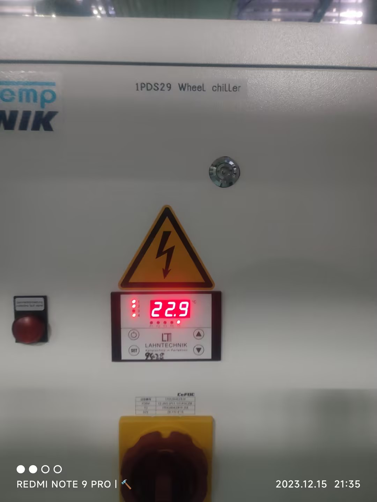
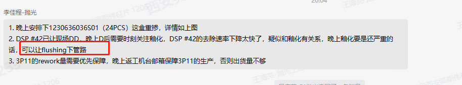

2023年12月15日 21:30:13
1） 一觉醒来突然间就下雪了
不过早上回去的时候是真的冷啊
冻手的那种感觉
起来 一地洁白
不过也就是上班路上徒增烦恼而已
天那么冷
上班路上连卖饭的都不出来了
雪天路滑
也没个人分享
想想都没意思
难受
2） 异常设备
1. DSP39 返工 不DD，及时安排3P11出货
2. 一盒重掺外延 安排DSP24加工下去
3. DSP29 白天Chiller温控器异常导致盘面温度偏高数据恶化 恢复后供给温度实际值异常不是之前设定的23度 邀请设备排查改善

设备已经重启楼下Chiller温控器 及时观察数据
4. DSP42 Particle持续异常 设备对应存在釉化 怀疑存在相关性 持续关注

3) 离开一个人只真的难受啊 裂开的感觉
4) 爱了爱了
HTML真的是个非常神奇的语言
html 真的是一种神奇的语言
统一样式表
css负责后台定义样式
html负责前面默默的写东西
浏览器负责安安静静的渲染
样式什么的调好就固定了
唯一不好的就是和设备相关
使用绝对大小的话
不同的设备显示效果是有差别的
不过在统一化的设备
这点问题就不存在了
在公司电脑上，同一大小的显示器
统一的浏览器环境
感觉还是很Nice的。